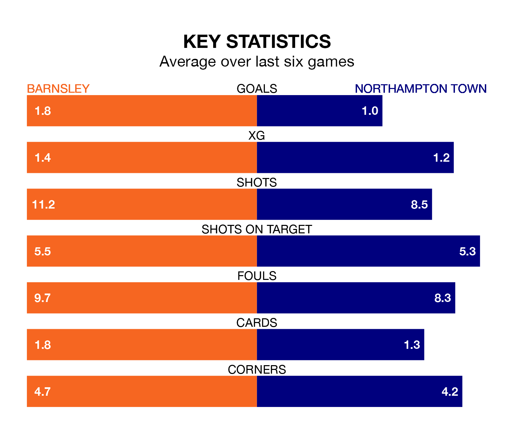

Barnsley are heavy favourites to keep all three points at home in Saturday lunchtime's kick-off against Northampton Town.
The Tykes, who sit fifth in EFL League One with 45 games played, are priced at 1.4 to seal victory at Oakwell.
Sitting nine places and 16 points behind them in the table, Northampton are 5.2 to win with *Betting Company*, while the draw is at 4.2.
With 81 goals in 45 games so far this season, Barnsley are the league's third-highest scorers with 1.8 goals per game. But they are conceding more than average too, letting in 63 goals at a rate of 1.4 per game.
Northampton, meanwhile, are below average scorers, with 1.2 goals per game, compared to a league average of 1.3. They have conceded 1.4 goals per game.
In Devante Cole, the Tykes have one of the league's sharpest shooters so far this season. He has notched 18 goals in 45 appearances, to sit third in the scoring charts.
His goal rate of one every 196 minutes is slightly quicker than that of Sam Hoskins, Town's top scorer with a goal every 194 minutes, and a total of 15 goals in 38 games.
The home team are in bad form in EFL League One, with one win and a draw from their last six games.
With three wins and three losses over that period, the Cobblers' form is better – they have taken nine points from 18, compared to Barnsley's four.
Barnsley's last match was on Saturday, a 3-2 loss against Blackpool, with Adam Phillips and John Mcatee getting the goals for the Tykes.
Northampton lost 2-1 against Exeter City last time out, also on Saturday, with Jon Guthrie on the scoresheet.
Updated: 07:59 (UTC), 26/04/24